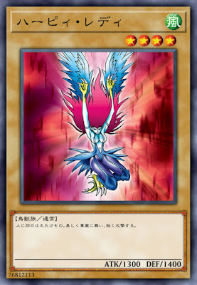
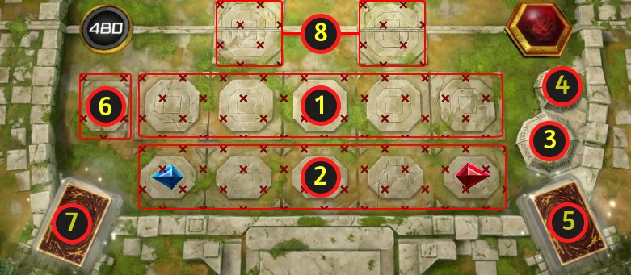
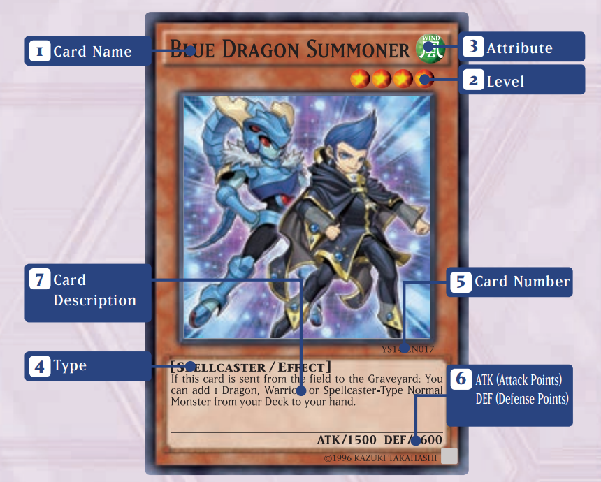
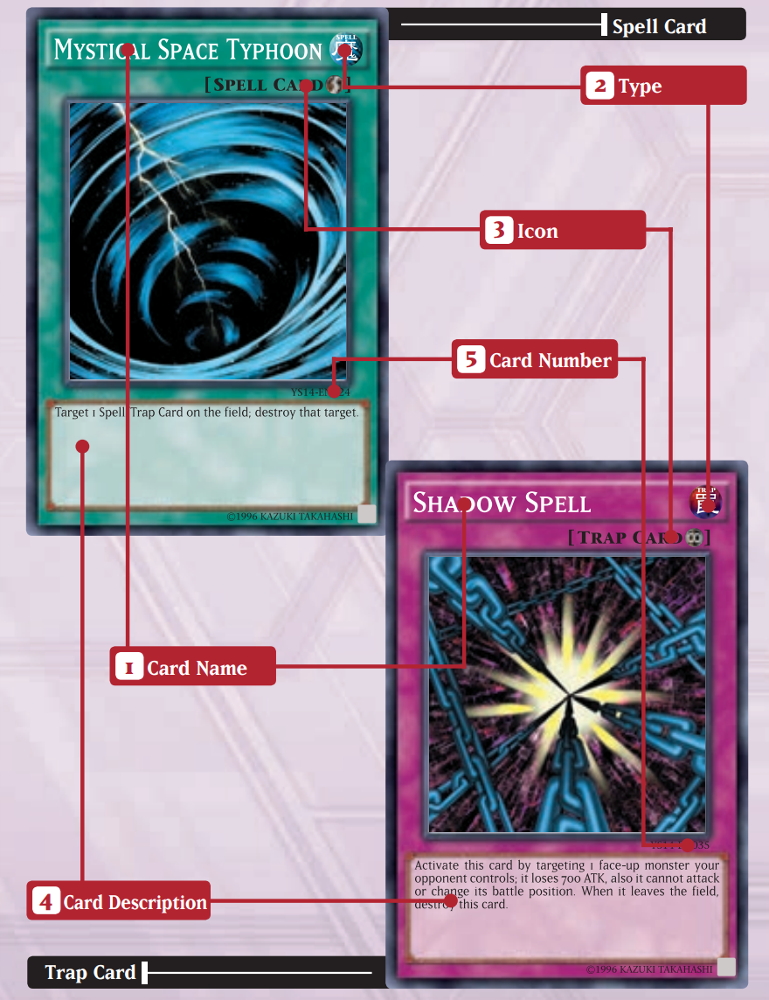
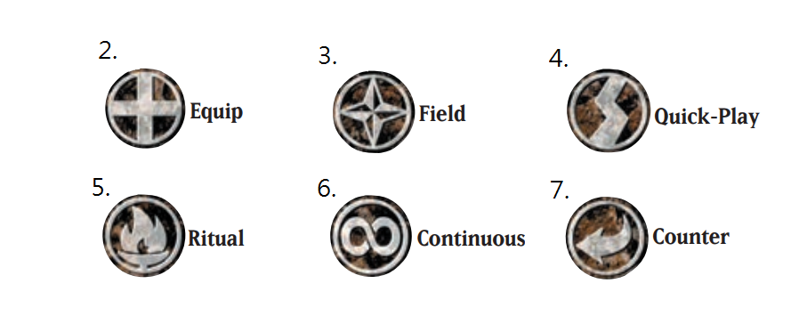
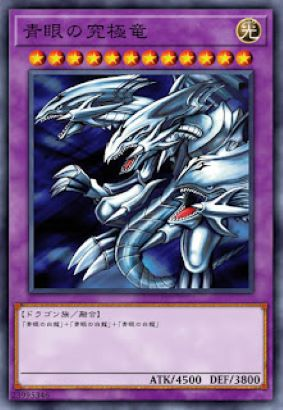
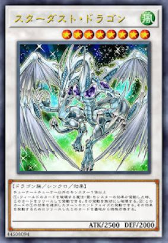
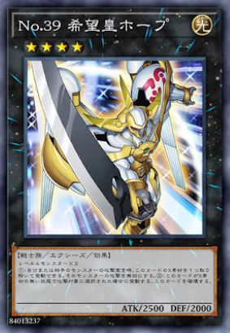
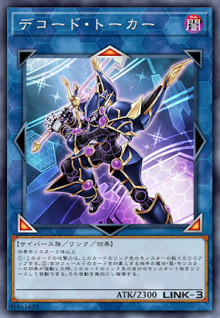
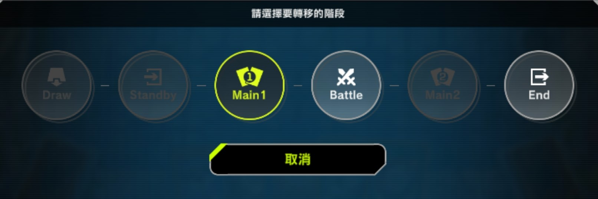

1.組牌規則
一副完整的牌組牌組由 40-60 張主要卡片(通常怪獸、效果怪獸、儀式怪獸、靈擺怪獸、魔法卡、陷阱卡) + 0-15 張額外卡片(融合怪獸、同調怪獸、超量怪獸、連接怪獸)組成，每張卡片最多只能投入三張，並且必須遵守禁限卡表(由此查看)。 請注意，由「規則」指定的卡名同樣被視為相同的卡片，例如:

《神鷹女郎》
人長出羽毛的魔獸，表演華麗的舞蹈進行快攻。
《神鷹女郎1》
此卡名在規則上當作「神鷹女郎」使用。
①：只要此卡在怪獸區存在，場上風屬性怪獸的攻擊力上升300。
《神鷹女郎2》
此卡名在規則上當作「神鷹女郎」使用。
①：此卡以戰鬥破壞的反轉怪獸效果無效化。
《神鷹女郎3》
此卡名在規則上當作「神鷹女郎」使用。
①：和此卡進行過戰鬥的對方怪獸在以對方回合計算的2回合內不能進行攻擊宣言。
無論這四張卡牌出現在哪裡，它們都被視為相同的卡片，因此在主要牌組中，你只能投入其中三張卡牌。
2.場地介紹

1.主要怪獸區
這個區域用來放置召喚出來的怪獸。最多可放置五張卡片。怪獸可以三種形式放置：正面攻擊表示、正面守備表示和背面守備表示。垂直放置的卡牌為攻擊表示，水平放置的卡牌為守備表示。
2.魔法陷阱區
這個區域可以放置魔法卡和陷阱卡。與怪獸區區域類似，這裡最多可以放置五張卡片。你可以直接將卡片正面朝上放置以發動，也可以背面朝下放置之後再發動。靈擺怪獸卡可以作為魔法卡放置在最左側和最右側的區域，只要靈擺怪獸卡在該區域，相應的區域就會變成靈擺區域。
3.墓地
怪獸從場上離開以及魔法陷阱卡發動後，會正面朝上送入墓地。墓地中的所有卡片都是公開訊息，對手可以隨時查看墓地中的卡片。
4.除外區
卡牌除外時，會送至此處而非墓地。所有被除外的卡牌（除背面朝上的卡牌外）均為公開訊息，對手可隨時查看。只有您自己才能查看背面朝上的除外卡牌。
5.主卡組區
主卡組面朝下放置於此。決鬥過程中，從牌組頂部抽牌，如果你的牌組耗盡，立刻敗北。如果你發動任何需要你展示卡牌、查看牌組（即使你沒有查看）或加入/移除卡牌的卡牌或效果，你必須洗牌。
6.場地區
你的場地區用於放置場地魔法，可以正面朝上或背面朝上放置。每位玩家只能維持一張場地魔法卡。從手牌發動場地魔法卡時，你必須將場地區域中所有卡牌送入墓地。
7.額外卡組區
你的額外牌組以背面朝上的方式放置於此。遊戲期間，你可以隨時查看你的額外牌組。遊戲過程中，額外牌組中的怪獸可以使用其對應的召喚方式從此處特殊召喚至額外怪獸區或主要怪獸區。原本會從場上送入墓地的靈擺怪獸，會改為正面朝上放置於此。
8.額外怪獸區
額外怪獸區是你可以將額外牌組中的怪獸特殊召喚到場上的地方。如果特殊召喚的是連結怪獸或靈擺怪獸，則必須將其放置到額外怪獸區或連結怪獸箭頭方向的己方怪獸區。
這個區域用來放置召喚出來的怪獸。最多可放置五張卡片。怪獸可以三種形式放置：正面攻擊表示、正面守備表示和背面守備表示。垂直放置的卡牌為攻擊表示，水平放置的卡牌為守備表示。
2.魔法陷阱區
這個區域可以放置魔法卡和陷阱卡。與怪獸區區域類似，這裡最多可以放置五張卡片。你可以直接將卡片正面朝上放置以發動，也可以背面朝下放置之後再發動。靈擺怪獸卡可以作為魔法卡放置在最左側和最右側的區域，只要靈擺怪獸卡在該區域，相應的區域就會變成靈擺區域。
3.墓地
怪獸從場上離開以及魔法陷阱卡發動後，會正面朝上送入墓地。墓地中的所有卡片都是公開訊息，對手可以隨時查看墓地中的卡片。
4.除外區
卡牌除外時，會送至此處而非墓地。所有被除外的卡牌（除背面朝上的卡牌外）均為公開訊息，對手可隨時查看。只有您自己才能查看背面朝上的除外卡牌。
5.主卡組區
主卡組面朝下放置於此。決鬥過程中，從牌組頂部抽牌，如果你的牌組耗盡，立刻敗北。如果你發動任何需要你展示卡牌、查看牌組（即使你沒有查看）或加入/移除卡牌的卡牌或效果，你必須洗牌。
6.場地區
你的場地區用於放置場地魔法，可以正面朝上或背面朝上放置。每位玩家只能維持一張場地魔法卡。從手牌發動場地魔法卡時，你必須將場地區域中所有卡牌送入墓地。
7.額外卡組區
你的額外牌組以背面朝上的方式放置於此。遊戲期間，你可以隨時查看你的額外牌組。遊戲過程中，額外牌組中的怪獸可以使用其對應的召喚方式從此處特殊召喚至額外怪獸區或主要怪獸區。原本會從場上送入墓地的靈擺怪獸，會改為正面朝上放置於此。
8.額外怪獸區
額外怪獸區是你可以將額外牌組中的怪獸特殊召喚到場上的地方。如果特殊召喚的是連結怪獸或靈擺怪獸，則必須將其放置到額外怪獸區或連結怪獸箭頭方向的己方怪獸區。
3.卡片三大種類
由於篇幅關係與簡化複雜度，暫不介紹儀式與靈擺卡片。卡片三大種類:分為怪獸卡，魔法卡與陷阱卡。
怪獸卡

1.卡片名稱
又稱為"卡名"，每副卡組最多能投入三張同卡名卡牌。
2.等級
星星數量代表怪獸的等級。不是超量的階級!
通常/升級召喚根據這裡來決定需要的祭品數量。
每個玩家每回合可以進行1次通常/升級召喚，4星以下無須怪獸作為祭品，5-6星需1個怪獸作為祭品，7星以上需2個怪獸作為祭品。
守備放置時怪獸不能以表側表示進行通常/升級召喚，只能以裡側守備表示放置在場上。
可以放在主要怪獸區，但不能放在額外怪獸區。
3.屬性
代表怪獸的屬性，某些效果需要特定的屬性才能生效。
4.類型和效果
代表怪獸的類型，某些效果需要特定的類型才能生效。通常表示通常怪獸，效果表示效果怪獸。
5.卡號
此號碼僅與實體卡相關，為了分類和收集的目的。
6.攻擊力和防禦力
這些數字代表怪獸的攻擊力和防禦力。
7.卡牌描述
所有卡片效果都寫在這個方框裡，包括如何使用以及何時可以使用。
通常怪獸沒有效果，只有卡片背景描述。 某些怪獸無需通常召喚或蓋放，即可透過自身效果或其他卡片的效果特殊召喚到場上。
魔法卡與陷阱卡
又稱為"卡名"，每副卡組最多能投入三張同卡名卡牌。
2.等級
星星數量代表怪獸的等級。不是超量的階級!
通常/升級召喚根據這裡來決定需要的祭品數量。
每個玩家每回合可以進行1次通常/升級召喚，4星以下無須怪獸作為祭品，5-6星需1個怪獸作為祭品，7星以上需2個怪獸作為祭品。
守備放置時怪獸不能以表側表示進行通常/升級召喚，只能以裡側守備表示放置在場上。
可以放在主要怪獸區，但不能放在額外怪獸區。
3.屬性
代表怪獸的屬性，某些效果需要特定的屬性才能生效。
4.類型和效果
代表怪獸的類型，某些效果需要特定的類型才能生效。通常表示通常怪獸，效果表示效果怪獸。
5.卡號
此號碼僅與實體卡相關，為了分類和收集的目的。
6.攻擊力和防禦力
這些數字代表怪獸的攻擊力和防禦力。
7.卡牌描述
所有卡片效果都寫在這個方框裡，包括如何使用以及何時可以使用。
通常怪獸沒有效果，只有卡片背景描述。 某些怪獸無需通常召喚或蓋放，即可透過自身效果或其他卡片的效果特殊召喚到場上。

1.卡片名稱
與怪獸卡一樣，又稱為"卡名"，每副卡組最多能投入三張同卡名卡牌。
2.類型
不要將卡片上的"類型"與"怪獸類型"混淆。卡片類型與卡片顏色可以區分魔法卡和陷阱卡。魔法卡會寫"魔"，陷阱卡會寫"罠"。
3.圖示
魔法/陷阱卡旁邊的符號會標示該魔法或陷阱卡的特殊類型（如有）。
(1)通常魔法(沒有圖示)
將卡片正面朝上放置於場上並宣告發動。效果處理完畢後，將卡片送入墓地。
為1隻你選擇的表側表示怪獸（可以是己方或對手的怪獸）賦予額外效果。發動後，它們會留在場上。裝備魔法卡只會影響1隻怪獸，但仍會佔用你1個魔法陷阱區域。如果裝備怪獸被破壞、翻轉為裡側表示或從場上移除，其裝備的卡片也會被破壞。
(3)場地魔法
場地魔法放置於你的場地區並持續生效。雙方玩家的場上只能放置一張場地魔法卡。若要使用另一張場地魔法卡，則需將正在生效的場地魔法卡送入墓地。
(4)速攻魔法(2速)
可以在自己回合的任何階段發動。如果你將卡片覆蓋，也可以在對手的回合發動，但你不能在覆蓋的同一回合發動該卡片。
(5)儀式魔法
用於進行儀式召喚。用法與使用普通魔法卡相同。
(6)永續魔法/永續陷阱
永續魔法/永續陷阱發動後不會送墓，而是留在場上持續發揮作用。但對手在你使用瞬間之前用任何方式將其從場上離開，效果會失效。
用於進行儀式召喚。用法與使用普通魔法卡相同。
(7)反制陷阱(3速)
通常會在其他卡片發動時觸發，因為速度的關係，反制陷阱很難被阻止，通常只能被其他反擊陷阱卡連鎖發動。
4.卡牌描述
所有卡片效果都寫在這個方框裡，包括如何使用以及何時可以使用。
魔法卡通常只能在你的主要階段發動，陷阱卡可以在對手的回合發動。
發動陷阱卡之前，必須先將其蓋放到場上。你不能在蓋放陷阱卡的同一回合發動，但下一個回合開始後可以隨時發動。
5.卡號
此號碼僅與實體卡相關，為了分類和收集的目的。
與怪獸卡一樣，又稱為"卡名"，每副卡組最多能投入三張同卡名卡牌。
2.類型
不要將卡片上的"類型"與"怪獸類型"混淆。卡片類型與卡片顏色可以區分魔法卡和陷阱卡。魔法卡會寫"魔"，陷阱卡會寫"罠"。
3.圖示
魔法/陷阱卡旁邊的符號會標示該魔法或陷阱卡的特殊類型（如有）。
(1)通常魔法(沒有圖示)
將卡片正面朝上放置於場上並宣告發動。效果處理完畢後，將卡片送入墓地。

(2)裝備魔法
為1隻你選擇的表側表示怪獸（可以是己方或對手的怪獸）賦予額外效果。發動後，它們會留在場上。裝備魔法卡只會影響1隻怪獸，但仍會佔用你1個魔法陷阱區域。如果裝備怪獸被破壞、翻轉為裡側表示或從場上移除，其裝備的卡片也會被破壞。
(3)場地魔法
場地魔法放置於你的場地區並持續生效。雙方玩家的場上只能放置一張場地魔法卡。若要使用另一張場地魔法卡，則需將正在生效的場地魔法卡送入墓地。
(4)速攻魔法(2速)
可以在自己回合的任何階段發動。如果你將卡片覆蓋，也可以在對手的回合發動，但你不能在覆蓋的同一回合發動該卡片。
(5)儀式魔法
用於進行儀式召喚。用法與使用普通魔法卡相同。
(6)永續魔法/永續陷阱
永續魔法/永續陷阱發動後不會送墓，而是留在場上持續發揮作用。但對手在你使用瞬間之前用任何方式將其從場上離開，效果會失效。
用於進行儀式召喚。用法與使用普通魔法卡相同。
(7)反制陷阱(3速)
通常會在其他卡片發動時觸發，因為速度的關係，反制陷阱很難被阻止，通常只能被其他反擊陷阱卡連鎖發動。
4.卡牌描述
所有卡片效果都寫在這個方框裡，包括如何使用以及何時可以使用。
魔法卡通常只能在你的主要階段發動，陷阱卡可以在對手的回合發動。
發動陷阱卡之前，必須先將其蓋放到場上。你不能在蓋放陷阱卡的同一回合發動，但下一個回合開始後可以隨時發動。
5.卡號
此號碼僅與實體卡相關，為了分類和收集的目的。
4.額外牌組
從額外牌組入場的怪獸都是特殊召喚。 除了靈擺(不介紹)與連結怪獸，其他額外特殊召喚皆可放在所有主要怪獸區與額外怪獸區。融合怪獸
融合怪獸的顏色為紫色。
使用帶有融合效果的卡片(包含牌組專用融合和怪獸效果融合)卡片上指定的素材從場上或手牌送入墓地，然後從額外牌組特殊召喚選擇的融合怪獸。
是效果召喚，將素材送墓也算是效果。
EX:

《青眼究極龍》
「青眼白龍」＋「青眼白龍」＋「青眼白龍」
PS:接觸融合
這種牌是融合卡，但不算融合召喚，不需要使用帶有融合效果的卡片，可以不入連鎖直接特殊召喚。
EX:

「電子龍」＋機械族怪獸一體以上
此卡不能作為融合素材。
把我方﹒對方場上上述所記述的卡送去墓地才能從額外牌組特殊召喚。（不需要「融合」）
①：此卡的原攻擊力變成作為此卡的融合素材的怪獸數量×1000。
同步怪獸
同步怪獸怪獸的顏色為白色。
素材相加的星數「剛好」等於同步怪獸的星數送去墓地，可以從額外牌組同步召喚。
有些同步怪獸會要求特定的素材(通常最少會要求其中一隻是協調怪獸)。
被裡側覆蓋的怪獸不能成為同步素材。
EX:

《星塵龍》
協調＋協調以外的怪獸一體以上
①：要讓場上之卡破壞的魔法‧陷阱‧怪獸效果發動時，把此卡解放才能發動。該發動無效並破壞。
②：因此卡①的效果適用的回合結束階段才能發動。為讓那個效果發動而解放的此卡從墓地特殊召喚。
超量怪獸(xyz怪獸)
超量怪獸怪獸的顏色為黑色。
素材怪獸星數相同，可以疊放在超量怪獸下方，超量召喚階級與素材星數相同的卡片。
被裡側覆蓋的怪獸和衍生物不能成為超量素材。
被作為素材的卡片不當作卡片，不會成為效果對象。
有些超量怪獸會要求特定的素材。
超量怪獸的星星不是等級，而是階級。
EX:

《No.39 希望皇霍普》
等級四怪獸二體
①：我方或對方攻擊宣言時，取除此卡1個超量素材才能發動。該怪獸的攻擊無效。
②：沒有超量素材的此卡被選為攻擊對象的場合發動。此卡破壞。
連結怪獸
連結怪獸怪獸的顏色為藍色。
連結素材相當寬鬆，依連結怪獸link數量將怪獸送墓即可連結召喚。
以包含連結怪獸作為素材時，可以依照連結怪獸的Link值作為多數素材。
被裡側覆蓋的怪獸不能成為連結素材。
有些超量怪獸會要求特定的素材。
連結怪獸沒有等級和階級，沒有守備力，不能變成守備表示。
連結怪獸連結召喚時，只能佔據額外怪獸格和連結指向的格子(包含對手的連結指向)。
EX:

《解碼語者》
效果怪獸二體以上
①：此卡的攻擊力上升此卡所連結區的怪獸數量×500。
②：以我方場上的卡為對象的對方的魔法﹒陷阱﹒怪獸的效果發動時，可以把此卡所連結區1體我方的怪獸解放發動。那個發動無效並破壞。
參考影片:
5.連鎖
什麼是連鎖?連鎖是判斷多張卡牌效果生效「順序」的方法。
當多張卡牌的效果同時發動，雙方想要在卡牌打出後，但在卡牌效果生效前發動效果，就會用到連鎖。
若一方選擇連鎖發動效果，另一方可接續連鎖發動，直到雙方都不想再連鎖為止。
效果處理時，由最後一次連鎖先處理，然後按相反的順序結算(俗稱逆解連鎖)(後發先至)。


卡片速度
每張卡片效果的速度都在1~3之間。如果你想連鎖發動卡片，必須使用速度為2以上的效果，而且該效果的速度不能比上一個連鎖效果低。
速度1卡片(1速)
1.非速攻所有魔法卡
2.效果怪獸的效果
3.墓地裡的魔法效果
這是所有卡片速度中最慢的，通常無法連鎖發動效果。除非有誘發效果，否則通常只能在己方主要階段發動。
速度2卡片(2速)
1.速攻魔法卡
2.非反制陷阱的所有陷阱卡
3.墓地裡的陷阱效果
3.有寫明可在在對方回合發動，或符合誘發即時條件，效果怪獸的效果。
可以用來連鎖發動速度為 1 或 2 的效果，通常可以在任何階段發動。
速度3卡片(3速)
1.反制陷阱
可以用來連鎖發動所有速度的效果，通常只能被反制陷阱連鎖。
6.回合流程
雙方玩家初始手牌均為五張，生命值為 8000。 回合玩家具有效果發動的優先權。決鬥每回合分為六個階段:
抽牌階段 -> 準備階段 -> 主要階段 1 -> 戰鬥階段 -> 主要階段 2 -> 結束階段

這些回合會重複進行，直到滿足勝利條件之一為止：
1.一方的生命值降至0。
2.一方必須抽一張或多張牌，牌庫耗盡無法抽牌時。
3.一方特殊勝利時。
抽牌階段
這是第一階段。回合玩家從牌頂抽一張卡片。牌組沒有卡片而無法抽牌的玩家輸掉決鬥。抽卡後，可以在進入準備階段前發動陷阱卡或速攻魔法卡。
重要提示：先手玩家第一回合抽牌階段不能抽牌。
準備階段
有些卡牌的效果會在準備階段發動。你仍然可以在進入主要階段1之前發動陷阱卡或速攻魔法卡。
主要階段1
這是你使用大部分卡牌的時候：你可以通常召喚、蓋放或改變怪獸的攻守狀態，發動卡牌效果，以及蓋放魔法和陷阱卡。
但是不能改變本回合登場或重複改變怪獸的攻守狀態。
戰鬥階段
選擇己方場上一隻怪獸進行攻擊，並選擇對方場上一隻怪獸作為攻擊目標，然後宣告攻擊。如果對方場上沒有怪獸，你可以直接攻擊。
你場上所有表側攻擊表示的怪獸每回合都可以進行一次攻擊。如果你不想用怪獸攻擊，也可以不攻擊。
即使場上有怪獸，你也不需要每回合都進行戰鬥階段。
重要提示：先手玩家第一回合不能進行戰鬥階段。
主要階段2
如果你已經進行了戰鬥階段，你的回合將進入主要階段2。玩家在該階段可以執行的操作與主要階段1相同，但是無法執行玩家在主要階段1中已經執行過次數有限制的操作。
結束階段
宣布你的回合結束，如果在本階段結束時你的手牌超過六張，請選擇一些牌並將其送至墓地，直到你的手牌只剩下六張為止。只有回合玩家需要將手牌送至墓地。
7.認識現環境
過去大家認識的遊戲，可能是召喚怪獸，覆蓋卡片，結束這回合，但是現行遊戲王的環境完全不一樣:如同以上的影片，才是現在的遊戲王的環境。現在遊戲王的遊戲王的環境講求連續的特召以及戰術的執行度，每副牌組都有不同的戰術要執行，所以後攻沒手坑被對手演爆也是非常正常的事。
因此，先手的優勢往往大過後手。
不過，你還是能夠獲得良好的遊戲體驗。一方面，官方會針對環境調整，公布最新的禁卡表打壓過強的主題，放寬強度合理的主題。
另一方面，也有許多卡片，可以在第一回合阻止對手展開，這些阻止對手的卡片，就是所謂的「手坑」。